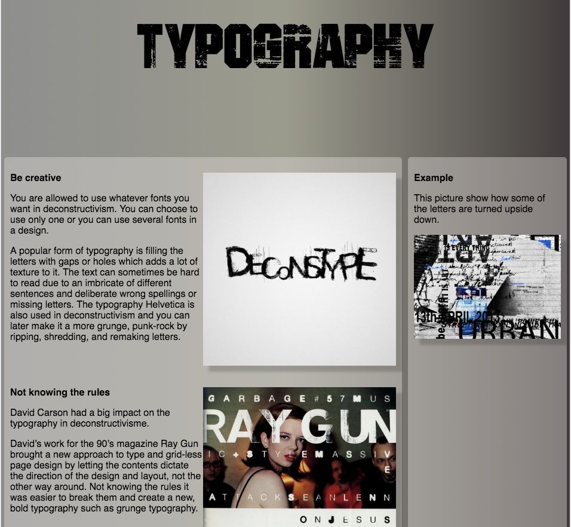
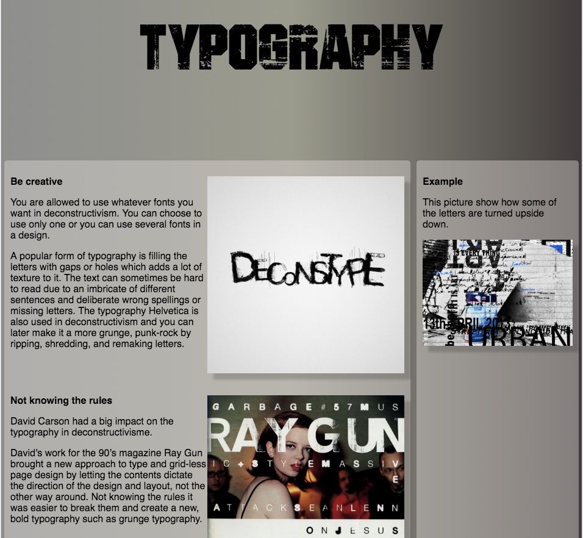

Vi blev i dette forløb introduceret til UX og forbedring af brugeroplevelser. Vores opgave bestod i at skulle lave et redesign af et eksisterende produkt samt udvikling af et nyt. Vores case i denne opgave var Fronter.com, som er dét LMS-system KEA gør brug af.
Samlet formål:
At få en forståelse for og erfaring med samspillet mellem brugere og brugergrænseflader. At lære hvordan man går fra brugerindsigt til færdig idé.
Proces:
I denne opgave skulle vi i grupper illustrere og kode en mobile-first webprototype, ud fra ovenstående user-research.
Vi blev i starten af projektet introduceret til Team Canvas, som er et værktøj der hjælper gruppen til at formulere og bedre forstå mål, roller og værdier i gruppen.
Her lavede vi et trello-board, som hjalp os med at holde overblik over og uddelegere alle de opgaver der skulle udføres.
Sketch-fasen udførte vi i fællesskab og under 'decide' blev vi alle enige om den endelige skitse vi ville følge. Igen i fællesskab lavede vi en prototype i XD, der lagde grobund for vores webprototypes design og opsætning.
Herfra uddelegerede vi de forskellige opgaver og gik i gang med at kode webprototypen.
På den fjerde dag i designsprintet mødtes vi alle i gruppen og sammensatte al koden, så vores webprototype blev til én velfungerende.
På den femte og sidste dag udførte vi brugertest på 3 forskellige testpersoner og analyserede herefter vores indsamlede data, for at lave en efterbehandling af testen. Udover brugertestene lavede vi audits for prototypen evaluerede på hvad der kunne gøres bedre.
Refleksion:
Det var for mig tydeligt, at vi i gruppen ikke havde en stor kendskab eller erfaring med designsprints. Selve processen er intens, hvor der er begrænset tid til hver opgave, hvorfor jeg ikke synes at vi fik snakket sammen i gruppen ordentligt og klarlagt vores fremgangsmetode.
Ikke alle gruppemedlemmerne ville mødes og arbejde sammen. Dette kunne mærkes da vi skulle sammensætte koden, da ikke alle havde gjort brug af de samme CSS units, såsom px, vw, etc.
Programmer brugt:
- Adobe XD
- Brackets
- FileZilla
- Google Drev - deling af filer


 
